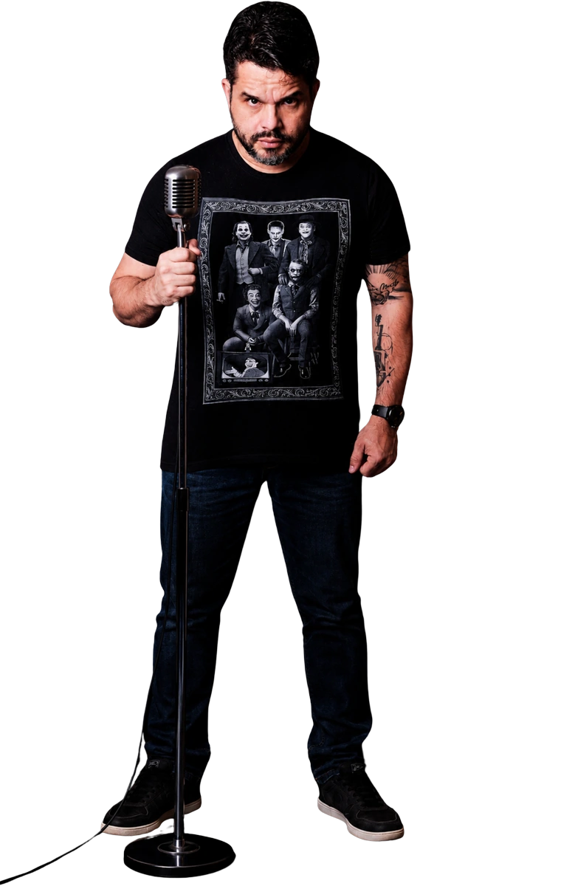
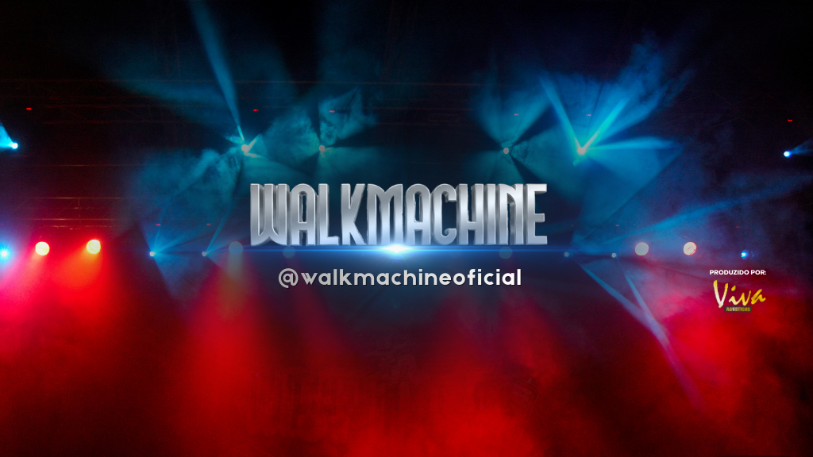
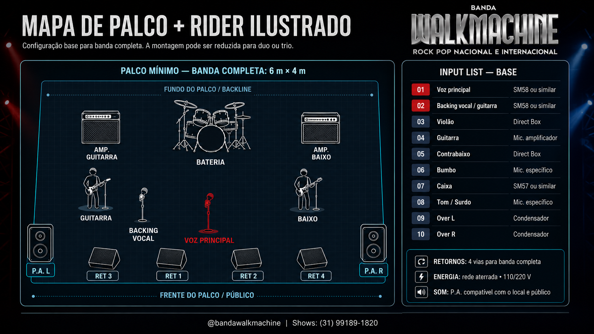

O melhor do rock pop de todos os tempos
Banda completa, trio ou duo acústico para casamentos, eventos corporativos, festas particulares, bares e pubs — com estrutura profissional e repertório que enche a pista.



Músicos experientes, repertório de várias gerações
A Walkmachine é uma banda de Belo Horizonte especializada em Rock Pop nacional e internacional. Com um repertório formado pelos maiores clássicos de várias gerações, a banda transforma eventos em experiências memoráveis através de apresentações dinâmicas, interação com o público e alta qualidade musical.
Atuando em eventos corporativos, casamentos, festas particulares, bares e pubs, a banda oferece formatos flexíveis que vão do duo acústico à banda completa — sempre com estrutura profissional e foco total na satisfação dos convidados.
Integrantes da Banda


Quem já contratou a banda
Eventos corporativos, casamentos e casas de show em Belo Horizonte e região.
Palco cheio, pista cheia
Registros das apresentações — do duo acústico na cerimônia à banda completa no auge da festa.
Veja e ouça a banda

Assistir aos vídeosBastidores e novidades
Três formatos, o mesmo padrão
{{ f.desc }}
Formatos de contratação
Para cerimônia, festa e show ao vivo. Valores de referência — ajustamos conforme cidade, duração e estrutura do local.
Visão geral para produção
Estrutura organizada para garantir qualidade sonora, operação segura e a melhor experiência do público. A produção deve ser informada previamente sobre limitações técnicas do local.
Configuração base para banda completa. A montagem pode ser reduzida para trio ou duo.

Perguntas frequentes
Informações essenciais para contratação da Banda Walkmachine em Belo Horizonte, Nova Lima, Região Metropolitana e todo o estado de Minas Gerais.
Belo Horizonte (BH), Nova Lima (Alphaville / Vila da Serra), Contagem, Betim, Lagoa Santa, Sabará, Sete Lagoas, Ouro Preto, Tiradentes e demais cidades de Minas Gerais.
Como contratar a Banda Walkmachine para casamentos ou eventos em BH?
A contratação é simples e ágil: clique no botão de WhatsApp para falar diretamente com a produção. Informe a data prevista, cidade/local do evento e formato desejado (Duo, Trio ou Banda Completa) para receber uma proposta detalhada e personalizada.
Quais os formatos de show disponíveis?
Disponibilizamos 3 formatos adaptáveis para cada etapa do seu evento: Duo Acústico (voz e violão intimista para recepções e cerimônias), Trio Acústico (equilíbrio ideal para pubs e festas com volume controlado) e Banda Completa (show eletrizante com backline completo para pista de dança cheia).
Qual é o estilo e repertório musical tocado?
Repertório focado no melhor do Rock Pop nacional e internacional de várias gerações (anos 70, 80, 90, 2000 até clássicos atuais), incluindo Queen, The Police, Bon Jovi, Skank, Jota Quest, Barão Vermelho, Charlie Brown Jr, Legião Urbana, Capital Inicial e muito mais.
A banda atende outras cidades além de Belo Horizonte?
Sim! Realizamos apresentações com frequência em Nova Lima, Alphaville, Contagem, Betim, Lagoa Santa, Ouro Preto, Tiradentes e em todo o interior de Minas Gerais e outros estados.
Vamos fazer o seu evento acontecer?
Consulte datas disponíveis, monte o formato ideal e receba a proposta fechada para o seu evento.